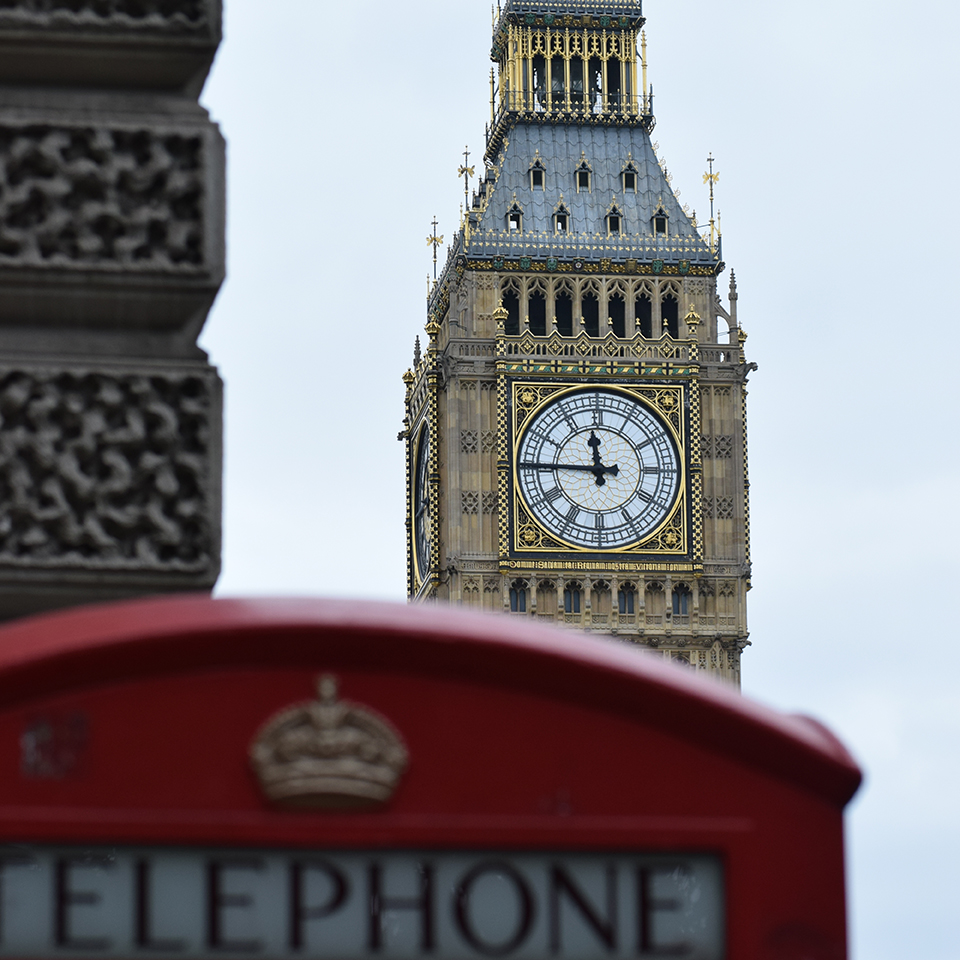
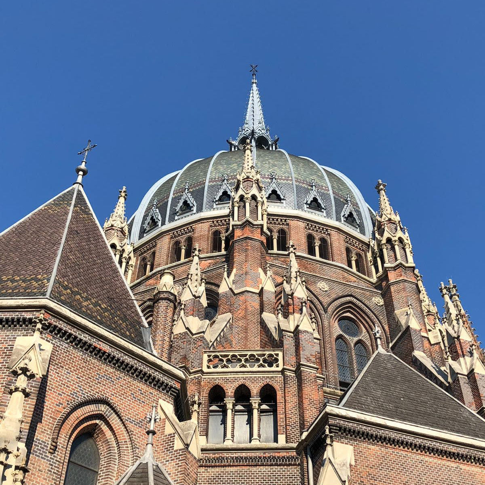
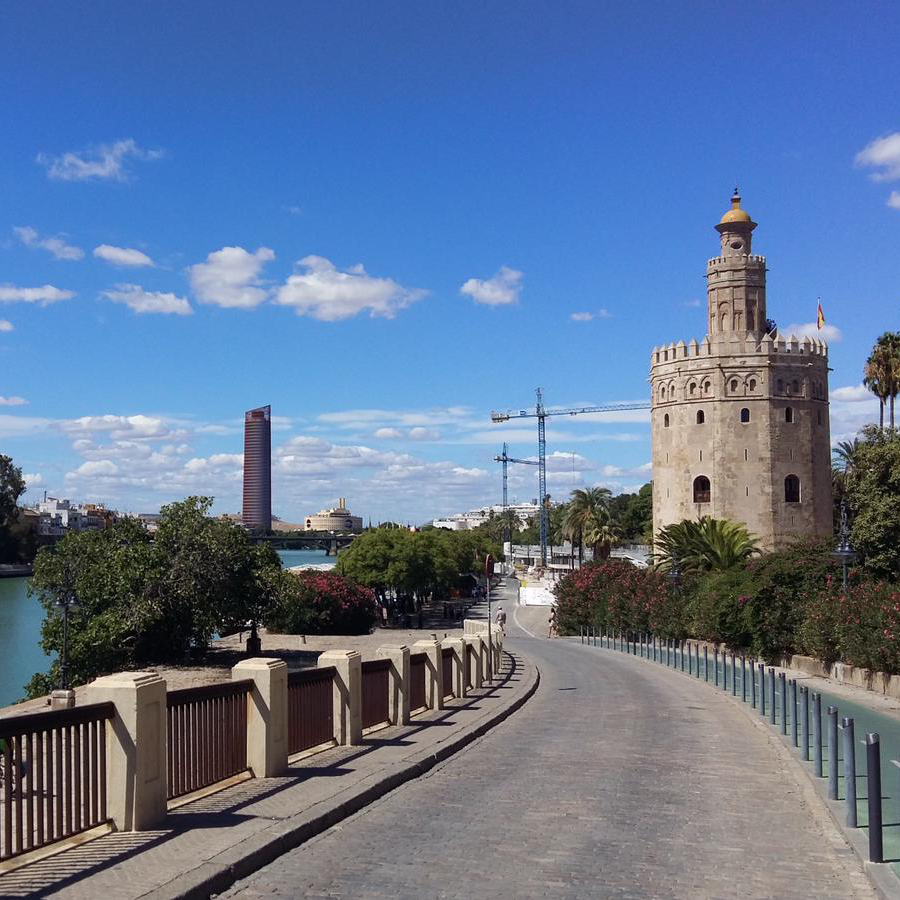
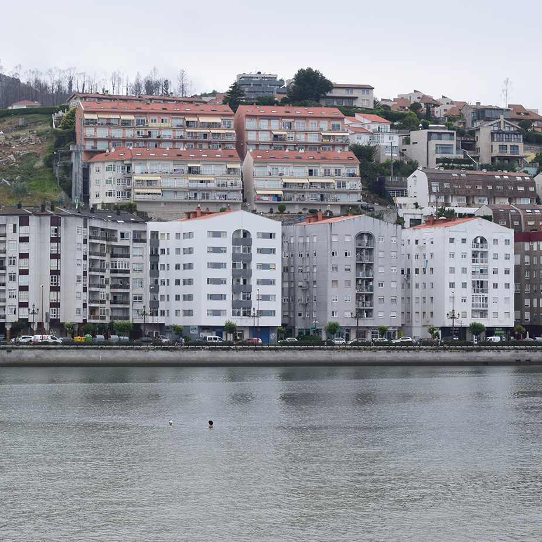
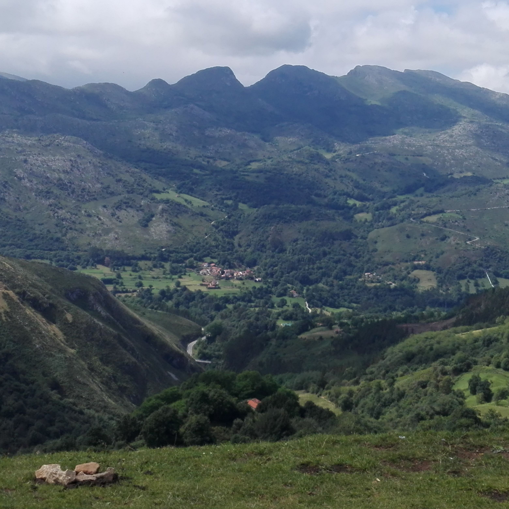

Londres
Et trobaràs amb una ciutat plena de monuments i edificis interessants per conèixer. A més, es tracta d’una ciutat realment extensa.
T'anem a explicar quins són els llocs més importants que visitar a Londres perquè puguis organitzar les teves visites.
Llegir més

Praga
La capital de la República Txeca, és una de les ciutats més boniques que puguis conèixer i amb una història molt interessant.
Nosaltres t'ensenyarem lo més visitat i llocs on poder tastar la seva gastronomia.
Llegir més

Sevilla
Es una ciutat molt visitada per la seva gent, el seu encant i
la cultura que pots veure en ella al costat del "riu Guadalquivir.
T'informarem sobre la seva cultura, llocs d'interés i una manera divertida de moure's per allá."
Llegir més

Galícia
El nostre viatje a Galícia s'el dediquem a la seva capital Santiago de compostela; coneguda per ser de les més boniques.
T'oferim l'informació per fer un tour de cuatre dies.
Llegir més

Cantabria
Santander , capital de la comunitat autònoma de Cantàbria , és una acollidora i tranquil·la ciutat costanera, amb una àmplia badia orientada al sud la bellesa ha fet que sigui considera una de les badies més belles del món.
A més et presentem el parc natural de Cabárceno on podrás veure animals salvatjes a l'aire lliure.
Llegir més

Biscaia
A Gaztelugatxe gaudiràs d’un dels petits tresors del País Basc. Coneixeràs una illa apreciada per la seva gran bellesa natural i la llegenda que s’amaga en ella.
Llegir més